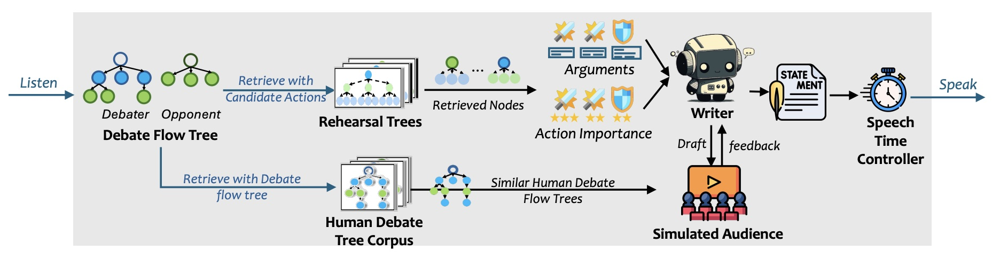
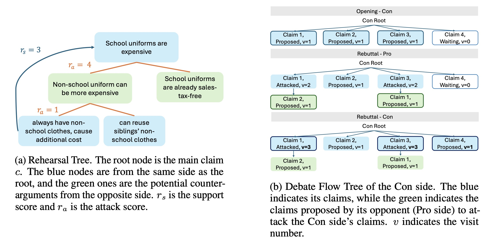
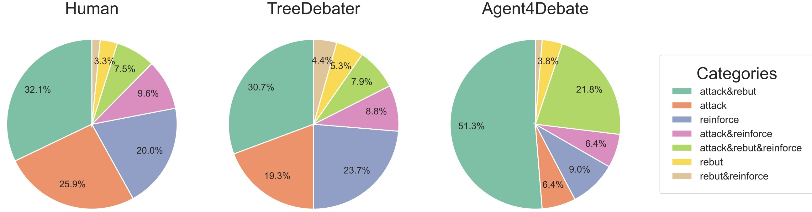
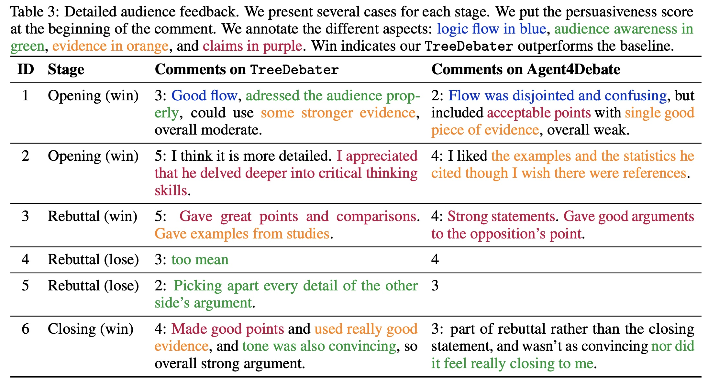

Strategic Planning and Rationalizing on Trees Make LLMs Better Debaters
Strategic Planning and Rationalizing on Trees Make LLMs Better Debaters
Winning competitive debates requires sophisticated reasoning and argument skills. There are unique challenges in the competitive debate: (1) The time constraints force debaters to make strategic choices about which points to pursue rather than covering all possible arguments; (2) The persuasiveness of the debate relies on the back-and-forth interaction between arguments, which a single final game status cannot evaluate. To address these challenges, we propose TreeDebater, a novel debate framework that excels in competitive debate. We introduce two tree structures: the Rehearsal Tree and Debate Flow Tree. The Rehearsal Tree anticipates the attack and defenses to evaluate the strength of the claim, while the Debate Flow Tree tracks the debate status to identify the active actions. TreeDebater allocates its time budget among candidate actions and uses the speech time controller and feedback from the simulated audience to revise its statement. The human evaluation on both the stage-level and the debate-level comparison shows that our TreeDebater outperforms the state-of-the-art multi-agent debate system. Further investigation shows that TreeDebater shows better strategies in limiting time to important debate actions, aligning with the strategies of human debate experts.




TreeDebater demonstrates superior performance compared to the Agent4Debate baseline across both Gemini and DeepSeek model settings. Our approach shows significant improvements in win rates and overall persuasiveness.
@inproceedings{wang2026strategic,
title={Strategic Planning and Rationalizing on Trees Make {LLM}s Better Debaters},
author={Danqing Wang and Zhuorui Ye and Xinran Zhao and Fei Fang and Lei Li},
booktitle={The Fourteenth International Conference on Learning Representations},
year={2026},
url={https://openreview.net/forum?id=E1hbqtHrvg}
}